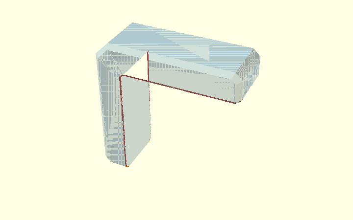

Chamfers and print relief on the Corner Bracket
This guide follows the simplified corner_bracket.scad model.
| Setting | What changes | How it is made |
|---|---|---|
arm_end_chamfer |
outer ends of both arms | coordinates in the 2D profile |
outer_corner_chamfer |
large outside corner | coordinates in the 2D profile |
side_edge_chamfer |
long outside edges on both broad faces | hull() keep envelope + intersection() |
elephant_foot_relief |
plywood-facing print edges | one continuous opening hull per broad side + tiny arm-tip correction |
For the general keep / cut / clip vocabulary, see OpenSCAD design concepts.
The editable walkthrough is chamfer_explained.scad.
1. Start with a plain L

2. Put simple chamfers directly in the 2D profile

The arm-end chamfers and large outside corner chamfer are points in base_profile_2d().
The rounded inside corner is added with inside_corner_fill_2d().
The tiny elephant-foot bevel on the two arm end faces also stays in this 2D profile. That avoids another pair of 3D cutters.
3. Extrude the profile

profile_body() gives the finished 2D outline its full bracket_width.
4. Make a temporary convex outside outline

The real L is concave. A global hull would bridge its open inside corner.
So outer_chamfer_envelope_2d() intentionally describes only the outside envelope.
5. Make the two outside-chamfer inputs

One profile keeps the full perimeter but is narrower than the bracket. The other reaches full width but is inset by side_edge_chamfer.
6. Connect those inputs with hull()

outer_side_chamfer_keep_envelope() creates the sloped outside volume that is allowed to remain.
7. Clip that envelope with the real L

~~~openscad module outer_side_chamfered_body() { if (side_edge_chamfer > 0) intersection() { profile_body(); outer_side_chamfer_keep_envelope(); } else profile_body(); } ~~~
The hull creates the slope; the intersection only clips it back to the real L.
8. One continuous elephant-foot relief per broad side

This is the important simplification.
The model does not build separate straight cutters for the horizontal edge, rounded corner and vertical edge.
inside_opening_2d() describes the complete open region once.
inside_side_relief_cuts() connects a normal opening layer to an enlarged opening layer at each printable side face:
~~~openscad module inside_side_relief_cuts() { if (elephant_foot_relief > 0) for (side = [-1, 1]) hull() { inside_side_relief_layer( side * (bracket_width / 2 - elephant_foot_relief) ); inside_side_relief_layer( side * bracket_width / 2, elephant_foot_relief ); } } ~~~
Each hull therefore handles one complete path:
~~~text horizontal plywood-facing edge ↓ rounded inside corner ↓ vertical plywood-facing edge ~~~
There are two hulls only because either broad face can be the print face.
The only separate 3D correction: the arm tips
Where the continuous side relief reaches the diagonal outside side chamfer, a tiny local wedge is needed.
The old implementation used a general multmatrix() coordinate frame. For these two fixed 45-degree junctions that was harder to read than necessary.
The current helper is only an extruded triangle:
~~~openscad module arm_tip_relief_wedge(length) { linear_extrude(height = length) polygon([ [-elephant_foot_relief - 1, -1], [1, -1], [1, elephant_foot_relief + 1] ]); } ~~~
It is placed with ordinary rotations:
- horizontal arm:
rotate([90, 0, 45]); - vertical arm:
rotate([0, 45, 90]); - the other broad side is obtained with
mirror().
No general transformation matrix is needed.
9. Subtract the relief

~~~openscad module print_compensated_body() { difference() { outer_side_chamfered_body(); inside_side_relief_cuts(); arm_tip_relief_cuts(); } } ~~~
So the 3D print compensation has only two conceptual pieces: the continuous main side relief and the small local arm-tip correction.
10. Final bracket

The final operation removes four countersunk M5 bolt paths:
~~~openscad module bracket() { difference() { print_compensated_body(); bolt_cuts(); } } ~~~
The bolt geometry is independent from the chamfer construction.